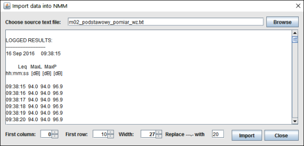
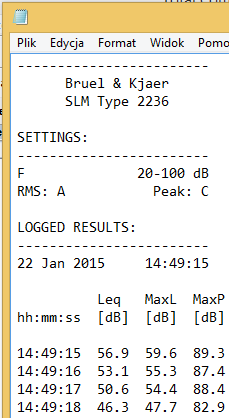
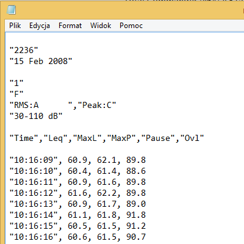
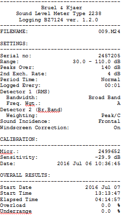
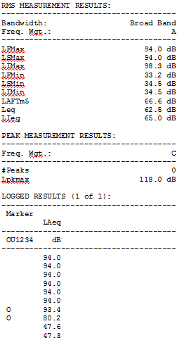

Program NMM pracuje na danych zapisanych przez urządzenia pomiarowe w plikach tektowych. Większość dostępnych urzadzen pomiarowych rejestruje dane w pamieci wewnętrznej lub na karcie pamięci. Dane te mogą zostać przeniesione na dysk komputera bezpośrednio do pliku tekstowego (np. za pomoca programu RS232 Data Logger), albo też mogą zostać wyeksportowane do pliku tektowego przez oprogramowanie sprzedawane razem z urządzeniem pomiarowym.
Każdy nowy projekt w programie NMM rozpoczyna się od importu danych pomiarowych z pliku lub plików tekstowych. W rozdziale omówiono dostepne w bieżącej wersji metody importu danych do programu. Dostępne są zarówno metody uniwersalne pozwalajace na import danych z dowolnych plików, jak tez metody dedykowane dla konkretnych urzadzeń, pozwalajace nieco szybciej przenieść dane z plików tekstowych do programu NMM.
W menu "ZAPIS"->"IMPORT" mamy do wyboru następujące pozycje:
Umożliwia import danych z dowolnego pliku tekstowego, gdzie zmierzone wartości poziomu dźwięku występują w jednej kolumnie. Importowane są wszystkie wiersze począwszy od wskazanego do końca pliku. Z kazdego wiersza pliku pobierany jest, poczawszy od wskazanego miejsca, ciąg znaków o zdefiniowanej przez użytkowanika długości. Jeżeli pobrany ciąg znakównie może być przekonwertowany do liczby rzeczywistej, jest on zastępowany wartością domyślną wskazana przez użytkownika w oknie dialogowym.
Widok okna dialogowego pozwalającego na import danych przedstawiony został poniżej.
Umożliwia import plików tekstowych powstałych po "wydrukowaniu" danych do pliku tekstowego z mierników Bruel & Kjaer w jednym z dwóch formatów - jako wydruk na drukarkę (pre formatowany), jako wydruk danych oddzielonych przecinkami (patrz: rysunki poniżej)
W przypadku pliku pre formatowanego do druku, istotne dane (na obrazku poniżej: 14:49:15 ...) muszą zaczynać się w 19 wierszu. Od tego wiersza rozpoczyna się import. W przypadku pliku z danymi oddzielonymi przecinkami import zaczyna się w wierszu 12 (na obrazku poniżej: "10:16:09") Jeżeli w czasie czytania pliku odstęp pomiędzy kolejnymi rekordami jest większy niż 1 sekunda (lub zdefiniowana w ustawieniach projektu rozdzielczość czasowa rekordów), dane zapisywane są jako nowy pomiar.
 Import pliku tekstowego zawierająceg wyniki pomiarów zapsane z miernika Bruel & Kjaer 2238 w formacie do druku na przenośną drukarkę Bruel & Kjaer. Przed rozpoczęciem importu należy podać datę wykonywania pomiarów. W pliku może być jedna bądź kilka sekcji (plików) z pomiarami. w nagłówku w wierszu 32 znajduje się data, a w wierszu 33 znajduje się godzina początku pomiaru.
Plik nie może kończyć się pustymi liniami. Przed importem puste linie na końcu pliku należy usunąć
Poniej przykładowy zapis druku do pliku z miernika Bruel & Kjaer 2238


Import pliku zawierającego dwie uporządkowane kolumny danych: godzinę rejestracji w pierwszej kolumnie i zarejestrowany poziom dźwięku w drugiej kolumnie. Format godziny: gg:mm:ss, format poziomu dźwięku: nn,nn. Kropka lub przecinek dziesiętny w zależności od ustawionej lokalizacji. Poniżej przykładowy plik tekstowy z dwoma kolumnami danych. Przed pierwszą kolumną nie może być żadnych znaków (włącznie ze spacją), po pierwszej kolumnie tabulator (poniżej oznaczony strzałką), następnie zmierzona wartość poziomu dźwięku. Wiersz kończy się znakiem powrotu karetki do kolejnego początku kolejnego wiersza.